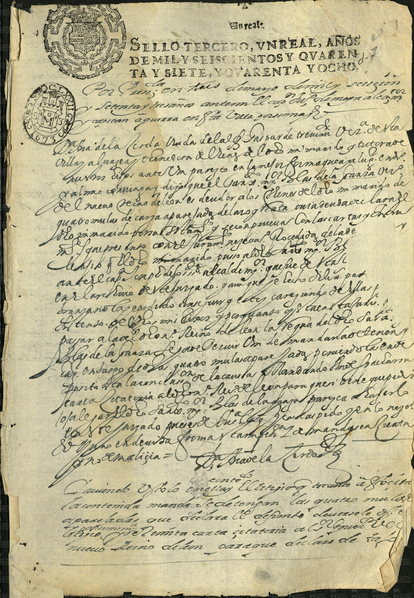

Tronco. Esposo de Beatriz González Navarro. Padre de Juana de la Garza, que se une con el alferez Lorenzo García de Ábrego.
Documento. Sello tercero, un real, años 1677 y 1678

Encabezado impreso: SELLO TERCERO, UN REAL, AÑOS DE MIL Y SEISCIENTOS Y SETENTA Y SIETE, Y SETENTA Y OCHO.
Cuerpo manuscrito (lectura paleográfica):
Por [proveído] en tres de mayo... capitán a guerra en esta villa...
Da. Ana de la Cerda, viuda del alferez Gaspar de Treviño, vecina de esta villa, al mayor... pide contra un paraje en la Mesa...
Nombra al capitán Blas de la Garza, vecino... cuatro mulas de carga aparejadas...
Manda se detengan las cuatro mulas aparejadas que declara el defunto...
Remite carta citatoria al Nuevo Reino de León para que declare de vista.
Firma al pie, con rúbrica. Archivo Municipal de Saltillo (marca de agua del repositorio en el facsímil).
Este pliego no es partida de bautizo. Es papel de juicio donde Blas de la Garza aparece como vecino y parte. La dote de Beatriz (1615, AMS) es otro expediente.
Esposa: Beatriz González Navarro · Hija: Juana
Volver a la portada